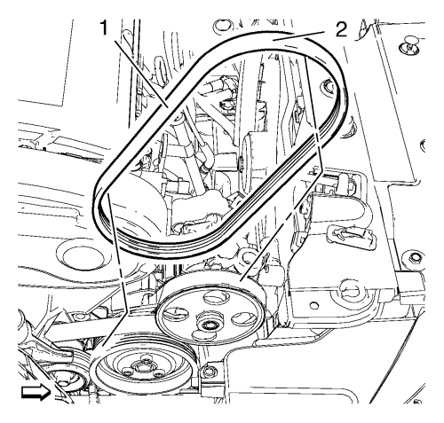
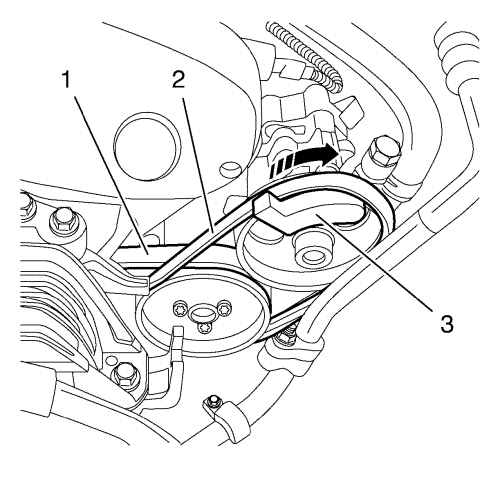

Sustitución de la correa de la bomba de la dirección asistida
Herramientas especiales
CH 49800 Herramienta de montaje de la correa de la bomba de la servodirección
Si desea informarse sobre herramientas regionales equivalentes, consultar Herramientas especiales .
Procedimiento de desmontaje
Atención: No utilice pasta antideslizante en la correa de accionamiento. La pasta antideslizante descompone la correa de accionamiento. Si no se sigue esta recomendación, pueden producirse daños en la correa de accionamiento.
- Abra el capó.

- Parta la correa de la bomba de la servodirección (2) con una herramienta de corte apropiada en la posición (1).
- Desmonte la correa de la bomba de la servodirección (2)
Procedimiento de montaje

- Afloje la tensión de la correa de accionamiento (1). Consultar Sustitución de la correa de accionamiento .
- Monte la herramienta de montaje CH-49800 (3) en la polea de la bomba de la dirección asistida.
- Monte una correa de servodirección NUEVA (2) alineándola con la bomba de agua de la polea.
- Gire la polea de la bomba de servodirección en sentido horario con la llave hexagonal de la polea de la bomba de servodirección del eje.
- Extraiga la herramienta de montaje CH-49800 (3).
- Compruebe que la correa está montada correctamente.
- Monte la correa de accionamiento. Consultar Montaje de la correa de accionamiento
- Cierre el capó.
| © Copyright Chevrolet. Reservados todos los derechos |